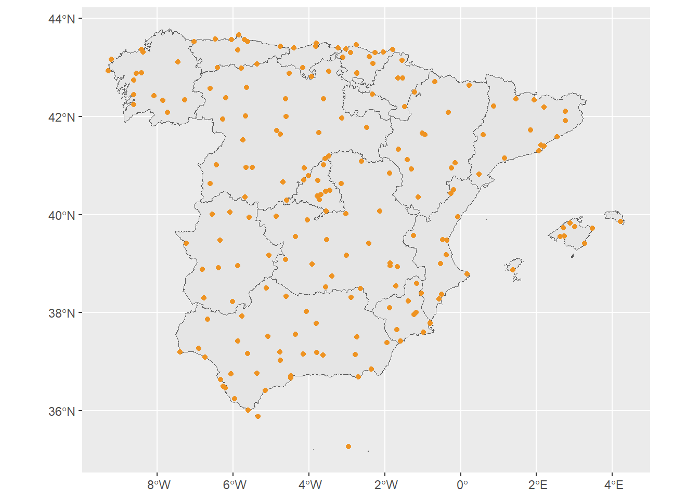
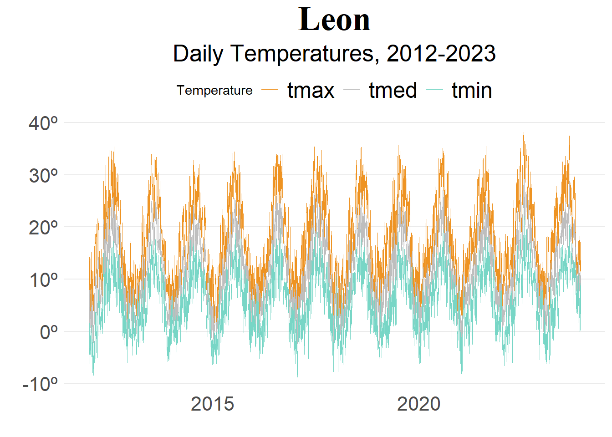
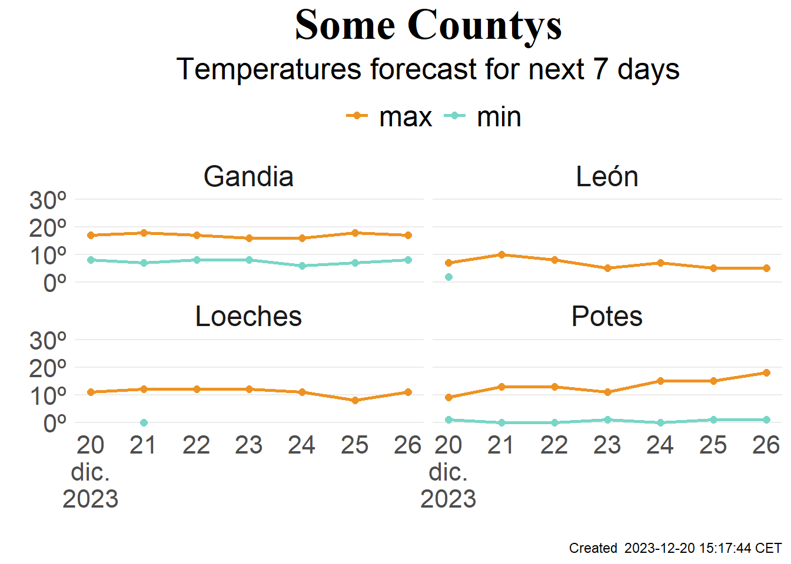

install.packages("climaemet", dependencies = TRUE)Start to download historical data and 4 days forecast.
Quick weather information
The goal of climaemet is to serve as an interface to download the climatic data of the Spanish Meteorological Agency (AEMET) directly from R using their API and create scientific graphs (climate charts, trend analysis of climate time series, temperature and precipitation anomalies maps, “warming stripes” graphics, climatograms, etc.).
Browse manual and vignettes at https://ropenspain.github.io/climaemet/.
1. climaemet library and registration
You can install the released version of climaemet from CRAN with:
library(climaemet)After install the package you have to register in the following URL in order to get the API key. Once you receive your ID key you have sig in using the following function:
browseURL("https://opendata.aemet.es/centrodedescargas/obtencionAPIKey")Once you receive your ID key you have to sig in using the following function:
aemet_api_key("YOUR ID KEY", install = TRUE, overwrite = TRUE)It would be useful to prepare these library for next steps..
library(tidyverse)
library(lubridate)
library(broom)
library(mapSpain)
library(ggmap)
library(sf)
library(ggplot2)2. Historical data by weather station
Aemet database contains historical weather data from 291 stations:

In order to see stations we are going to download the relation table which contains all of them and the ID:
stations <- aemet_stations()
head(stations)# A tibble: 6 × 7
indicativo indsinop nombre provincia altitud longitud latitud
<chr> <chr> <chr> <chr> <dbl> <dbl> <dbl>
1 0252D "08186" ARENYS DE MAR BARCELONA 74 2.54 41.6
2 0076 "08181" BARCELONA AEROPUERTO BARCELONA 4 2.07 41.3
3 0200E "" BARCELONA, FABRA BARCELONA 408 2.12 41.4
4 0201D "08180" BARCELONA BARCELONA 6 2.2 41.4
5 0149X "08174" MANRESA BARCELONA 291 1.84 41.7
6 0229I "08192" SABADELL AEROPUERTO BARCELONA 146 2.10 41.5Select the station that you want to analyze
station <- "2661" # LeonNow we are going to download daily climatic data for this station between 2012 and 2023 using the following function: “aemet_daily_clim”. This dataset contains multiple clima variables. We are interested on temperatures (average, minimal and max.). After filtrating teperatures we should convert to longer format help us to create time series charts.
leon_2023 <-
aemet_daily_clim(station, start = "2012-01-01", end = "2023-11-30") %>%
select(fecha, tmed, tmax, tmin) |>
pivot_longer(cols=c("tmed", "tmax", "tmin"),
names_to= "variable",
values_to="temp")Using “leon_2023” object, we can create the chart which contains daily historic temperatures in Leon:
ggplot(leon_2023, aes(x = fecha, y = temp, group = variable, color = variable)) +
geom_line(linewidth = 0.2) +
scale_y_continuous(
labels = scales::label_comma(suffix = "º")) +
scale_color_manual(values = c("#EE9322","grey","#78D6C6"),
name = "Temperature") +
theme_minimal()+
labs(title = "Leon",
subtitle = "Daily Temperatures, 2012-2023",
x = "", y ="") +
theme(
legend.position = "top",
panel.grid.major.x = element_blank(),
panel.grid.minor.x = element_blank(),
panel.grid.minor.y = element_blank(),
plot.title = element_text(size = 28, face = "bold", family = "serif", hjust = 0.5),
plot.subtitle = element_text(hjust = 0.5, size = 19),
axis.text = element_text(size = 16),
legend.text = element_text(size = 18)
)
3.Clima Forecast
If you are interested to know Aemet forecast, using “aemet_forecast_daily” you will be able to download clima variables by county.
using aemet_munic we are going to create an array which contains countys IDs.
varios_munis <- aemet_munic %>%
filter(municipio_nombre %in% c("Loeches", "León", "Potes", "Gandia")) %>%
pull(municipio)
daily <- aemet_forecast_daily(varios_munis)To review available variables
aemet_forecast_vars_available(daily)[1] "probPrecipitacion" "cotaNieveProv" "estadoCielo"
[4] "viento" "rachaMax" "temperatura"
[7] "sensTermica" "humedadRelativa" Now lets select those variable that we are interested on.
temp_diaria <- aemet_forecast_tidy(daily, "temperatura")
temp_diaria_limpio <- temp_diaria |>
select(
elaborado, fecha, municipio, nombre, temperatura_minima,
temperatura_maxima
) |>
tidyr::pivot_longer(cols = contains("temperatura"))Time to chartering
ggplot(temp_diaria_limpio) +
geom_line(aes(fecha, value, color = name), linewidth = 1) +
geom_point(aes(fecha, value, color = name), size = 1.9) +
facet_wrap(~nombre, ncol = 2) + # que haga un gráfico para cada municipio
scale_color_manual(
values = c("#EE9322", "#78D6C6"),
labels = c("max", "min")
) +
scale_x_date(
labels = scales::label_date_short(),
breaks = "day"
) +
scale_y_continuous(
labels = scales::label_comma(suffix = "º"),
limits = c(0,30)
) +
theme_minimal() +
labs(
x = "", y = "",
color = "",
title = "Some Countys",
subtitle = "Temperatures forecast for next 7 days",
caption = paste(
"Created ",
format(temp_diaria_limpio$elaborado[1], usetz = TRUE)
)
) +
theme(
legend.position = "top",
panel.grid.major.x = element_blank(),
panel.grid.minor.x = element_blank(),
panel.grid.minor.y = element_blank(),
plot.title = element_text(size = 28, face = "bold", family = "serif", hjust = 0.5),
plot.subtitle = element_text(hjust = 0.5, size = 19),
axis.text = element_text(size = 16),
legend.text = element_text(size = 18),
strip.text = element_text(size = 18)
)Warning: Removed 12 rows containing missing values (`geom_point()`).
Full site with more examples and vignettes on https://ropenspain.github.io/climaemet/